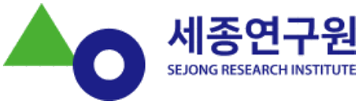

세종 이슈 대시보드SEJONG ISSUE DASHBOARD

질문으로 시작하는 세종 읽기.
세종연구원 연구자들의 작은 연구모임에서 던진 질문들을, 공공데이터와 쌓아 온 연구 자료로 하나씩 풀어 가는 상황판들입니다. 함께 던진 질문에서 출발해 조금씩 답을 찾아가는 중입니다. 목록을 누르면 이 화면 안에서 바로 열리고, 위쪽 탭으로 상황판을 오갈 수 있습니다.
연구원의 공식 업무가 아닌, 참여 연구자들의 호기심과 재미에서 시작한 작업입니다. 결과물은 참고용으로 봐 주세요.
06 — NEXT
다음 이슈를 준비하고 있습니다
데이터로 들여다보고 싶은 세종의 현안이 있나요? 주제와 함께 쓸 만한 자료를 알려 주시면 다음 상황판을 고르는 데 반영합니다. 상황판 제작 협업 문의도 환영합니다.